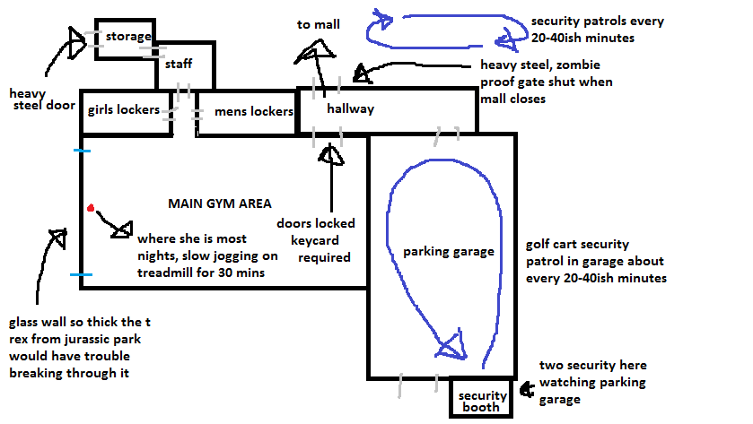

< < < Back
Women Are Wimps And That’s Not a Bad Thing – Return Of Kings
During the last winter, I had to change over to a 24 hour gym for two months because of some rough scheduling at my work. I wound up having to go to the gym around 11:30 at night. The crowd at that time consisted mostly of the temporary floaters—people who would come in for their free week trial and disappear back to whenever they came when it expired—but there was a small collection of regulars I quickly noticed. Two of these were a butterface with a sweet bod and her chubby but cute faced friend.
The length of my routine and the two girls usually co-ordinated. Sometimes they’d be there before I’d get in, or vice versa, and sometimes they’d leave before I did… again vice versa… but for the most part the three of us showed up and left around the same time. We never became friends. We never even talked really, just exchanging a few lame pleasantries from time to time whenever we happened to pass by each other without our headphones in.
One night I had a hook-up scheduled, so I hit the gym earlier then normal. This was on a weekend night, so none of the regular or temporary crowd was in there during my routine. Finally toward the end I noticed butterface show up and begin her work out. I left to hit the showers. By the time I came out the cute faced chubbikins had arrived. I caught them both briefly looking toward me, then around the gym. They were talking about something and their body language piqued my interest so I pretended to do something involved with my gym bag just outside the men’s room so I could listen in. This is what I heard:
Butterface: “Are you sure you want to work out alone?” She said it in the same tone as someone would ask: “Are you sure you want to walk naked through rape alley after sundown?”
Cute chubalubs: “I’ll just wear one of the alert bracelet things.”
The gym is often unstaffed, so they provide a weird USB stick looking thing with a button on it and a strap that can go around your wrist. If you hit the button, emergency help is contacted.
Butterface: “Are you sure?”
At this point the pair walked away from me, and I couldn’t hear the rest of their conversation over the gym music. Soon they came back and walked into the girl’s change room. I went out to the attached parking garage, began warming up my car, and by the time I was ready to drive away I saw Butterface and Chunky Cute walking out to their cars.
By this night I had been going to the gym for awhile. I had spent a lot of nights in there with one or the other of those two girls; just the two of us, alone, at the gym. And yet because I, the man, was leaving early, these two chicks had decided not to do their routines. I knew from working out with her for awhile that Butterface wasn’t even done half her routine by the time I came out of the showers, and Flab Abs had literally just shown up and hadn’t even begun. But because a man they were comfortable with wasn’t there to watch over them, these two cut and ran.
I drew a crude layout of the gym (you may have to click for a better view). It’s not drawn anywhere close to scale. It’s attached to a mall in a good part of the city.

In order to get into the gym, you have to pull up to the parking garage and be let in by one of the two security guards who work the gate. The parking garage itself is one level, long and sort of narrow. At the back is the entrance to the mall. You can see clear across the garage from one end to another, and at night when the mall is closed the only vehicles in there belong to the gym goers and the security guards. On average there were four to nine cars out there, all spaced far apart from one another. There were no concrete pillars for ne’er-do-wells to hide behind, and if anyone was crouching beside a car they’d be seen right away. And every twenty to forty minutes, one of the security guards hops in a cart and does a lazy patrol of the garage itself; not that they need to, since two of them overlook the only way to get into it at all times. And being as it was winter in Canada, anybody who’d have snuck in and waited beside a card would have had to put up with -30 degree Celsius temperatures (-22 Fahrenheit for you yanks).
There are several cameras in the parking garage, and in the hallway connecting it to the gym and the mall proper. After I decided to write this article, I counted the total number of cameras. There are nearly 30 cameras in the gym alone, and from the security monitor I sometimes saw when I talked to staff in their office, the cardio area (where the two girls spent most of their time) could be seen in varying degrees by 20 of them. The treadmills face a large window that a wrecking ball would have to whack twice to break. The gym doors are locked after 7:00 P.M. and require a key card to get in (unless the alarm goes off, in which case it unlocks to become a fire exit). The only other entrance into the gym is through a super heavy steel door on the outside of the mall that you’d need dynamite to blast open. The gym itself is well lit, wide open with no places for anyone to hide, with alarm buttons spaced liberally around it. A security guard out in the mall regularly patrols past the entrance to it, and a few times he even came in and gave the gym a casual glance as well.
The gym is the fitness equivalent to FortKnox, monitored by dozens of cameras, with at least three security guards within screaming range. There are alarm buttons within twenty feet no matter where you are in there. In order for a rapist to get in, he’d have to have the training of a US Navy SEAL, with a precisely timed plan worthy of an Ocean’s Insert Number movie. And even then; should he make it in without being noticed, the Green Berapist would have to grab chubbaloves or butterface within four seconds before she hit the button on her wrist alarm or bolted over to one of the numerous other ones on the wall.
And with all that security, these women still didn’t feel safe unless there was a man in the gym with them. Remember, I wasn’t friends with these girls. We never said more than ten words to each other at any one time. But the fact that I wasn’t going to be in there that night made them so wary that they actually cancelled their routines and fled. The country could collapse into the most nightmarish police state imaginable, with ten thousand troops goose stepping down the streets at all day and night, cameras with night and thermal vision covering literally every inch of our homes and cities, with random police spot checks, and women still wouldn’t feel safe unless a man they were trusted was in the room with them.
I’m not sure if Universities in other countries have them, but here in Canada most schools host an event called Take Back The Night. A mob of women get together at night, usually ten or eleven, whenever the sun’s gone down, and they go on a big march through the nearest neighbourhoods. The point of this is to prove that women don’t have to be afraid to walk around at night. This pointless, you go grrrl self schlicking usually makes the papers or local news, if the city is big enough. Pictures of ‘brave’ and ‘empowered’ womyn marching through the evil after sundown streets are clipped and shown around in the fem-centric classes as a big pat on the back. And after that, they never again brave the streets after sundown until next year’s Take Back The Night.
The funniest thing about this is that, in all the videos, pictures and stories of it, you never see the dozen or more police officers off to the sides of this march (mostly male) or the numerous boyfriends, beta friendzonee’s, male faculty and sneaky bastards looking to get some walking along to the side to protect these ‘strong’ girls. My first year in university they asked the guys in my dorm to march along, and we got outrageously drunk and did so. One of the guys from my dorm ran ahead of the march, put up his hood and stumbled out of a dark alley shouting, “I’m a rapist! I’m a rapist! I’m a rapist!” as he ran up and threw his girlfriend over his shoulder and took off with her. Not one girl tried to stop him and help their empowered sister, even though at the time nobody knew who he was. In their defence, they may have been too distracted with the rest of us guys who were slowly jogging in front of the march, screaming “ZOMBIES! WATCH OUT THERE’S ZOMBIES!” So the biggest symbol of female empowerment at many universities wouldn’t happen without the protection of men the female students trust, but don’t tell them that—that’s like—misogynist or whatever.
And for my last tedious example…
A chick I went to high school with has since become an avowed and very vocal feminist. And I don’t mean one of those bored chicks who think being a vocal radical involves spouting off feminazi slogan on Facebook and Twitter; this chick is involved with political parties, has given a speech for feminism the prime minister of Canada was attending and rumour currently has it she’s even writing a book about Millenial Feminism (she actually has a publisher lined up for it).
I’m sickened by the thought, but I’m even more amused by the events which happened at one farm party we went to in Grade 11. The farm kid’s parents had built a new house on their property a few years before, and their old one was a creepy two story brick thing they used for general storage. At some point in the night we all became convinced it was haunted (drunken 16 year olds aren’t that hard to convince of anything after all) and a few of us decided to explore the house. Me and two other guys went up to it, and two girls, including the future first female prime minister, decided to tag along. They were very vocal about how brave they were, and how wussy we guys were since the three of us had been standing at the back door debating about whether or not to actually go in when the girls showed up.
So we went inside and Miss Feminism taking a slight lead. We entered the living room and all of a sudden three cats came mewling past us. Miss Feminism screamed and literally jumped into my arms, burying her face into my shoulder like a frightened child. She refused to get off, and I wound up piggy backing her through the rest of the house. The other girl and one of the guys left after the cat scare as well, and unfortunately the rest of the house was pretty boring so I didn’t get to hear her scream anymore. Still, the whole time Miss Feminism cowered on my back. Her bravery lasted about twenty seconds into the spooky adventure, and she spent the rest of the time shrinking behind a man.
And later that we fooled around in my pup tent, though I’m not sure if that was a reward for ‘protecting’ her or just something that sloot had planned beforehand. Either way, go Feminism!
It’d all be hilariously absurd except Miss Feminism, and other women like her, are influencing our culture toward unrealistic expectations of women. They shout from the roof tops how every girl out there is Buffy the Goddamn Vampire Slayer. They need not be fearful of anything; this is a grrl’s world, just get out there sister and start kicking ass and taking names. They tell their sisters that they don’t need no man to protect them or make them feel safe.
But they do. There’s a reason why later tonight, when I walk to my friend’s place after sundown, I won’t encounter any women walking on their own even though there’ll be tons of men doing just that. And I will be going through good neighbourhoods to boot. There’s a reason why women rarely show up alone to night clubs and bars and raves and other such events, even though there are usually ample amounts of security there. Women are weak, dependent beings. They need men in their life to function beyond a scurrying, fear filled sustenance level of existence. And strange men don’t suffice for them either; the faceless forces of police and EMS workers and fire fighters and security guards. Women need personal protection from a man they trust. This is a fundamental fact of the sexes which has been true since the dawn of our species, and will be true right up to the moment we no longer exist.
For all their blah blah blahing about how empowered they are, the moment any woman feels threatened her first instinct is always to turn to a man she trusts. All this isn’t a bad thing, and the sooner we as a society acknowledge this unchanging fact of life, the sooner we can start fixing the other crap that’s wrong with us. Women are vulnerable and inside (not even deep down inside either, just under the surface inside) they want to be vulnerable. And most men want them to be as well. The depressing evidence is all around us about what happens when women pretend to be as strong as men.
Read More: Women Belong At Home Not At The Office


{kind=link}
{kind=link}
{kind=link}
{kind=link}